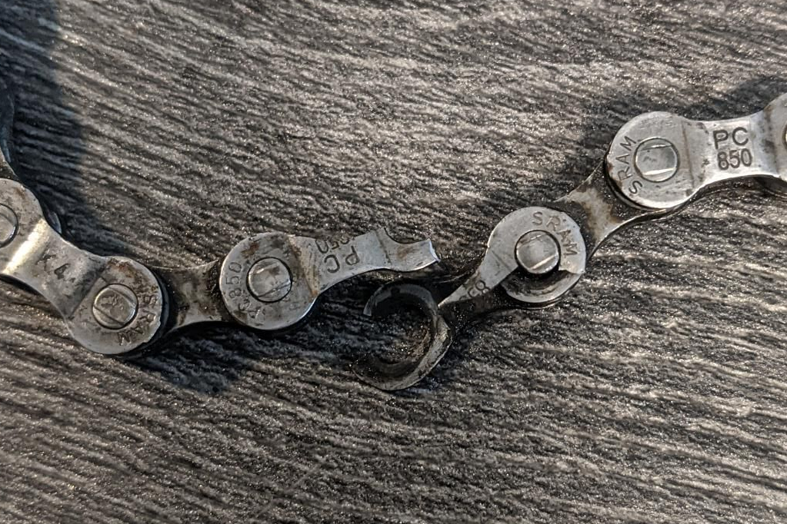
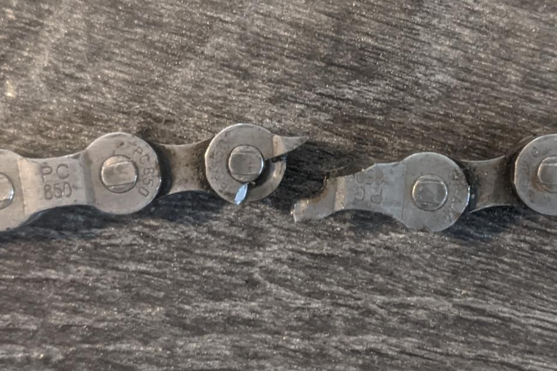

So over 2 years and about 3,000 miles on my bike, I have snapped 2 different chains, about 6 times total. I have no idea why this keeps happening. Let me explain some background
So I bought my first road bike off craigslist for $275. I had no idea about bikes back then, I did not even know the difference between a road bike and a hybrid bike back then but it turns out I made a good decision because I like riding road bikes now. Anyway about a year after I had started riding my bike my chain snapped. This was not the first time my chain snapped, so I was ready to repair it. I had a chain breaker and extra quick links from my last fix. (my chain broke the first time because an outside link was not pushed in all the way on, only half way onto the roller. I knew this did not look right when I bought the bike but I thought that was OK until it broke)
So when it snapped, I limped back home from wherever I was biking at the time and inspected my chain. What I saw perplexed me. Here is two photos  
Well after replacing the link with a quick link, I wondered if it was a fluke. I decided to continue riding and if it happened again, maybe it was a fluke still, but if it happened a third time, I would get a new chain.
This can be debunked easily. No I am not strong. Yes when I broke these links I was putting some stand up power down, but I dont think I had put more than 500 watts into the chain because I was not strong enough back then
No it was not. I took multiple measurements with my chain checker and it was not showing anywhere greater than .75 wear which is the recommended change elongation for 8 speed chains. I dont think the chain is old either, It is a Sram 850 and they still make those now, I guess that does not mean the chin was not old because SRAM could have made those chains for 20 years for all I know. But anyway this will be debunked later (keep reading lol)
I dont think the chain had a defect, this will be debunked later as well.
I am unsure how to inspect a chain to know if the metal latuce has changed since it was new, or even how to compare them, so maybe? I actually asked a Seattle bike discord channel wisdom to see if any of them had any ideas. The only thing I really heard from one of those people is that the metal in the chain can be degraded if you use acidic bike cleaners. I thought about it and I did use vinegar and water spray to clean my bike, so this could be a thing
Maybe the chain was a little rusted here or there but I think a chain is meant to hold up to rust. Also it did not always break where a link touched a roller, sometimes it broke in the middle of a link
I dont think it is a bad quality chain. The chain currently retails for $19 on SRAM’s website and an equivalent KMC basic 8 speed chain cost $20, so that seems like the usual cost for those chains, so it is probably not a bad chain. As well, on SRAM’s website for this chain, the marketing description starts with the words “Extremely strong”. Insert facepalm emoji here lol.
When I started road biking I was using some walmart oil based chain lube. When people on group rides started talking about was being a miracle lube, I finally took the opportunity to try it. I was using wax based chain lube for a few months before the chain broke. Could the years of oil based have messed with it? Turn out no, I debunk that later
So the next month, it happened a second time, and a week later it happened a third time. So I bought a new chain. I got the chain from Walmart because I was there for some groceries and stopped by the bike section to see if there were cheep chains and there was. I forgot how much it cost though.
So after riding the new chain for about 1000 miles or like 6 months, guess what happened? It broke, in the same way that the other one broke, on an outside link. It actually broke 3 times in total. Sometimes it would break by a roller, and sometimes it just breaks down the middle of the link where the break did not even touch a roller. I started to get mad
Once I got the new chain, I changed from cleaning my bike with vinegar and water to just using water so hopefully the new chain does not change its internal metal laticue structure because of the acid. We can rule out that the chain just wears and/or gets old because this chain did not have much use out of it. We can rule out the chain having a defect because it is unlikely that two chains from different manufacturers will both have a quality issue. I checked the new chain and I also did not see any rust or corrosion in it either. We can also rule out oil based lube because all the miles on this new chain were with muck off dry lube (wax based).
I had no choice then but to get a new chain, my third chain in 3,000 miles! I chose to get a KMC X8 for $20. I think this chain had in its marketing material that it is strong too because it has extra material in its outside links in a shape of an x to x out fatigue stress lol.
After putting about 500 miles on the chain, it seems to be fine, but 500 miles is not a lot. I am currently using this bike as my indoor trainer bike and I put about 400 indoor trainer chain equivalent miles on it since then. I guess I will post a blog in the future if the chain breaks and let you know what I decided to do about it. Maybe that means it is time to try to change the drivetrain? Yay I can finally upgrade to a 1x10 from the 3x8